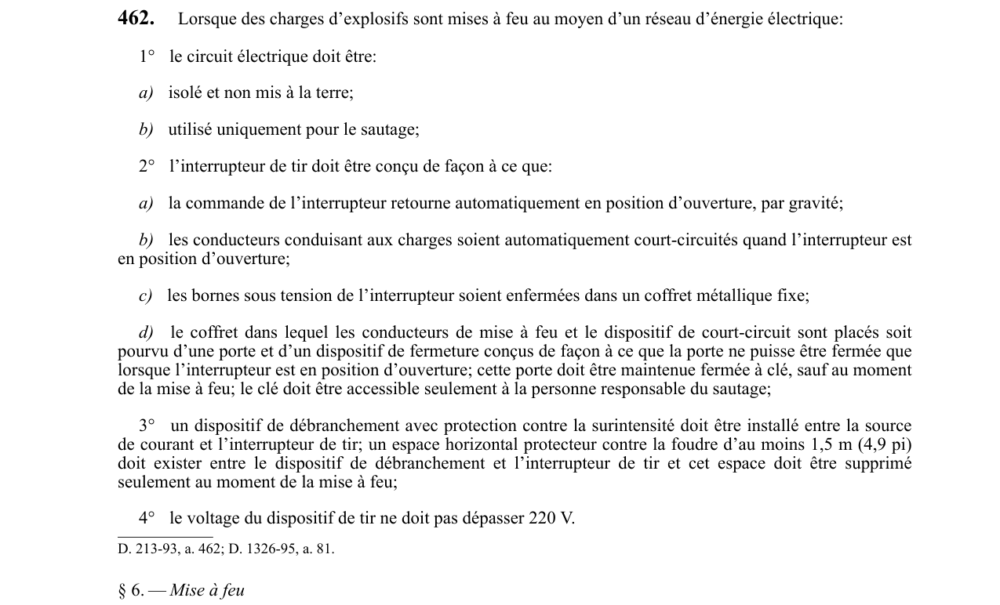

art-462-RSSM : charges explosifs mises feu moyen
🌐 LegisQuébec · 📄 PDF officiel
Texte officiel : capture du PDF

🔗 Voir art. 462 RSSM dans le PDF (page 121)
Version : texte officiel du RSSM (RLRQ c. S-2.1, r. 14), à jour au 1er mai 2024 — Éditeur officiel du Québec
Lorsque des charges d’explosifs sont mises à feu au moyen d’un réseau d’énergie électrique: 1° le circuit électrique doit être: a) isolé et non mis à la terre; b) utilisé uniquement pour le sautage; 2° l’interrupteur de tir doit être conçu de façon à ce que: a) la commande de l’interrupteur retourne automatiquement en position d’ouverture, par gravité; b) les conducteurs conduisant aux charges soient automatiquement court-circuités quand l’interrupteur est en position d’ouverture; c) les bornes sous tension de l’interrupteur soient enfermées dans un coffret métallique fixe; d) le coffret dans lequel les conducteurs de mise à feu et le dispositif de court-circuit sont placés soit pourvu d’une porte et d’un dispositif de fermeture conçus de façon à ce que la porte ne puisse être fermée que lorsque l’interrupteur est en position d’ouverture; cette porte doit être maintenue fermée à clé, sauf au moment de la mise à feu; le clé doit être accessible seulement à la personne responsable du sautage; 3° un dispositif de débranchement avec protection contre la surintensité doit être installé entre la source de courant et l’interrupteur de tir; un espace horizontal protecteur contre la foudre d’au moins 1,5 m (4,9 pi) doit exister entre le dispositif de débranchement et l’interrupteur de tir et cet espace doit être supprimé seulement au moment de la mise à feu; 4° le voltage du dispositif de tir ne doit pas dépasser 220 V. Cette interdiction vise l'employeur.
Voir aussi
- art. 461 : source énergie électrique commune utilisée · interdiction : lorsqu’une source d’énergie électrique commune est utilisée pour faire sauter des charges d’explosifs dans plus d’un lieu de…
- art. 463 : travaux sautage surface avertissement avant · obligation : lors de travaux de sautage en surface: 1° un avertissement avant un sautage primaire doit être donné au moyen d’une sirène entre la…
- ⚖️ Loi habilitante : LSST
- ↑ Index du bloc : Travaux à ciel ouvert et explosifs
Pages qui pointent ici (4)
- art-461-RSSM, source énergie électrique commune utilisée Recueil législatif
- art-463-RSSM, travaux sautage surface avertissement avant Recueil législatif
- art-476-RSSM, paragraphes sous-paragraphe appareillage électrique installé Recueil législatif
- RSSM - Travaux à ciel ouvert et explosifs (art. 401-475) Recueil législatif